貓眼的獨特之處：FHV-1 角結膜炎與虹膜黑色素瘤（FDIM）
原標題：The Unique Feline Eye — Part 1 Ocular surface disease／Part 2 Uveal melanocytic disease
2026 年 11 月 1 日｜FASAVA 2026｜場次 03（眼科）
目前只有 15 張現場照片，章節依主題重新排序，不一定是講者的播放順序。講義或錄音到了之後再補講者的口頭內容。
⭐ 本場重點
- 貓的眼表疾病大多和 FHV-1 有關，但要先排除短頭、內翻、全身性疾病
- FHV-1 潛伏在三叉神經節，復發是潛伏的本質，不只是治療失敗
- 治療目標是控制復發、不是根除，要跟飼主講清楚
- 講者首選輔助治療：玻尿酸鈉眼藥＋益生菌 E. faecium SF68
- 不要隨便點 NSAID 或類固醇；IDU 與防腐劑也可能刺激眼表
- 格狀角膜切開不會加速癒合、反而增加角膜壞死風險
- 虹膜黑變症與早期 FDIM 外觀無法區分，存活也相近；晚期 FDIM 才明顯有青光眼、轉移、存活較短
- 虹膜色素斑要連續拍照追蹤，在疼痛或青光眼出現前就和飼主討論摘眼
場次資訊
▾- 講題：The Unique Feline Eye（貓眼的獨特之處）；Part 1 = 眼表疾病（ocular surface disease），Part 2 = 葡萄膜黑色素細胞疾病（uveal melanocytic disease：虹膜黑變症與 FDIM，第 8 節）。
- 投影片右下角是 Animal Eye Care 的標誌，病例 3 註明資料來自 Animal Eye Care – Tokyo Animal Eye Clinic（東京）；投影片上的藥品（Senju IDU、Toray 的貓干擾素、玻尿酸單支裝）多是日本的獸醫用產品。
- 講者姓名、場次時間與廳別：照片上沒有，待補。
1. FHV-1 建立終生潛伏感染
▾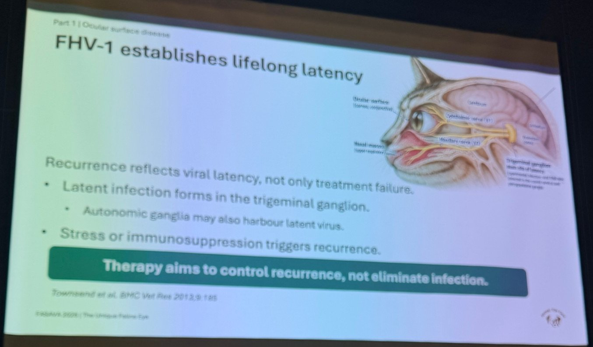
📸 復發反映的是病毒潛伏，不只是治療失敗：
- 潛伏感染形成於三叉神經節（圖：病毒從眼表與鼻黏膜沿眼神經 V1、上頜神經 V2 進入三叉神經節）。
- 自律神經節也可能藏有潛伏病毒。
- 緊迫或免疫抑制會誘發復發。
💡 大多數貓在幼貓期就感染，成貓的眼表疾病多是潛伏病毒再活化。常見的誘發情境：搬家、新成員、寄宿、手術麻醉、生產泌乳、全身性疾病，以及投予類固醇（包括全身與局部）。所以病史要問「最近有沒有發生什麼事」。
2. 抗病毒：Idoxuridine（IDU）
▾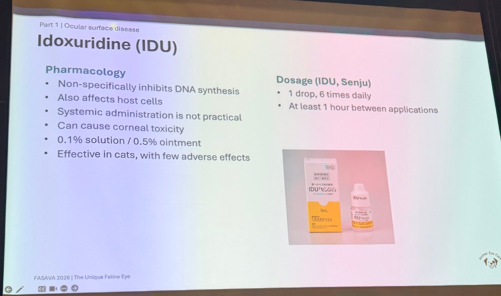
📸 藥理
- 非專一性抑制 DNA 合成
- 也會影響宿主細胞
- 無法全身給藥
- 可能造成角膜毒性
- 0.1% 眼藥水／0.5% 眼藥膏
- 在貓有效，副作用少
📸 劑量（Senju 的 IDU）
- 每次 1 滴，一天 6 次
- 每次之間至少間隔 1 小時
💡 IDU 是病毒抑制劑（virostatic），要頻繁點才有效，這也是一天 6 次的原因；症狀消退後通常還要再點一段時間。其他貓常用的抗病毒藥（供比較，非講者內容）：
| 藥物 | 途徑 | 常見用法 | 特點 |
|---|---|---|---|
| Famciclovir | 口服 | 約 90 mg/kg BID | 不用頻繁點藥，對難點眼藥的貓很實用；文獻證據最多 |
| Cidofovir 0.5% | 局部 | BID | 需要調劑；點藥次數少 |
| Ganciclovir 0.15% 凝膠 | 局部 | 每天多次 | 人用產品 |
| Trifluridine 1% | 局部 | 每天 5–6 次 | 效力強但刺激性高，貓常不耐受 |
| Idoxuridine | 局部 | 每天 6 次（本場） | 非專一、無法全身用 |
💡 第 7 節總結說急性期用「口服＋局部」抗病毒藥，口服指的應該就是 famciclovir；本場照片中沒有拍到 famciclovir 的投影片。
3. 輔助治療：玻尿酸與益生菌最重要
▾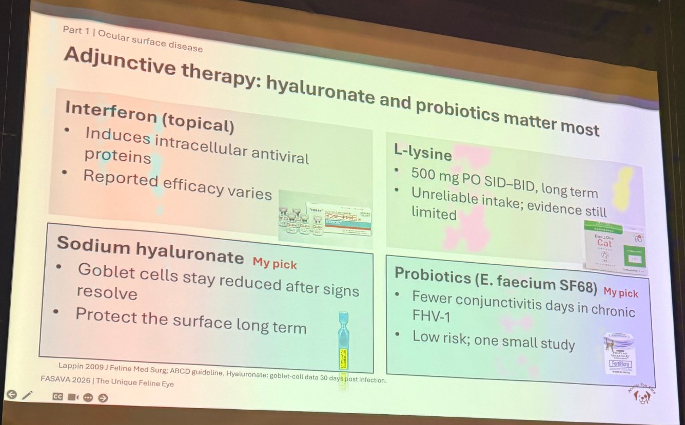
| 輔助治療 | 講者重點 | 講者評價 |
|---|---|---|
| 干擾素（局部） | 誘導細胞內的抗病毒蛋白；報告的療效不一 | — |
| L-離胺酸 | 500 mg PO SID–BID，長期；攝取量不穩定，證據仍有限 | — |
| 玻尿酸鈉眼藥 | 症狀消退後杯狀細胞仍然偏少；長期保護眼表 | My pick ✔ |
| 益生菌（E. faecium SF68，即 FortiFlora） | 慢性 FHV-1 貓的結膜炎天數較少；風險低，但只有一個小型研究 | My pick ✔ |
📸 投影片註腳：玻尿酸的依據是感染後 30 天的杯狀細胞資料。也就是眼睛看起來好了，淚膜的黏液層還沒恢復，所以要繼續保護。
💡 益生菌的研究是 Lappin 等人 2009 年在 JFMS 發表的：慢性 FHV-1 感染的貓吃 SF68，結膜炎發作的天數比對照組少，但樣本很小。L-離胺酸的系統性回顧（Bol & Bunnik 2015）認為沒有足夠證據支持療效，還可能因改變飲食而影響攝食；ABCD 指引也不再積極建議。講者也把它列在「證據有限」。
4. 處置與光療：少做，而且只是輔助
▾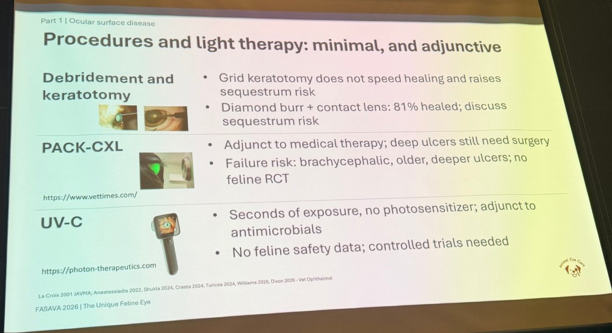
| 處置 | 講者重點 |
|---|---|
| 清創與角膜切開 | 格狀角膜切開（grid keratotomy）不會加速癒合，而且增加角膜壞死（sequestrum）風險；鑽石磨頭清創＋隱形眼鏡：81% 癒合，但要和飼主討論壞死風險 |
| PACK-CXL（角膜交聯） | 是內科治療的輔助；深的潰瘍仍需要手術。失敗風險：短頭品種、年紀較大、潰瘍較深；貓沒有隨機對照試驗 |
| UV-C | 照射只要幾秒、不需要光敏劑；抗菌藥的輔助。沒有貓的安全性資料，需要對照試驗 |
5. 病例 1：治療與第 10 天回診
▾📸 現場 治療計畫
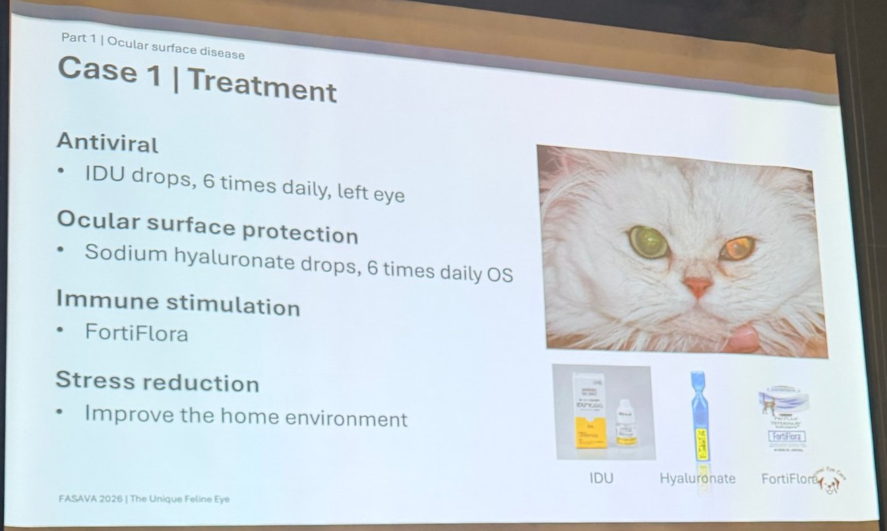
| 目的 | 處方 |
|---|---|
| 抗病毒 | IDU 眼藥水，一天 6 次，左眼 |
| 眼表保護 | 玻尿酸鈉眼藥水，一天 6 次，左眼（OS） |
| 免疫刺激 | FortiFlora |
| 減少緊迫 | 改善居家環境 |
💡 病例 1 的病史與初診檢查照片沒拍到。從照片看是長毛、偏扁臉的白貓，左眼角膜混濁並有血管新生；這種臉型本身就是眼表疾病的鑑別項目（第 7 節）。四個方向對應第 1–3 節：抗病毒、補眼表、撐免疫、去誘因。
📸 現場 第 10 天：改善中，但需要長期控制
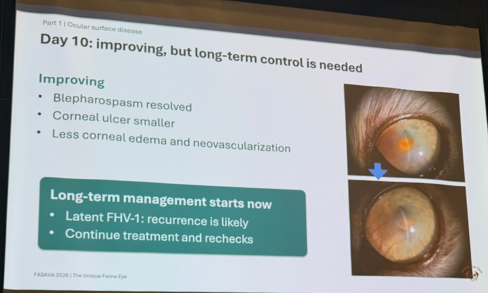
- 改善：眼瞼痙攣消失、角膜潰瘍變小、角膜水腫與血管新生減少。
6. 病例 2：帶回家的重點
▾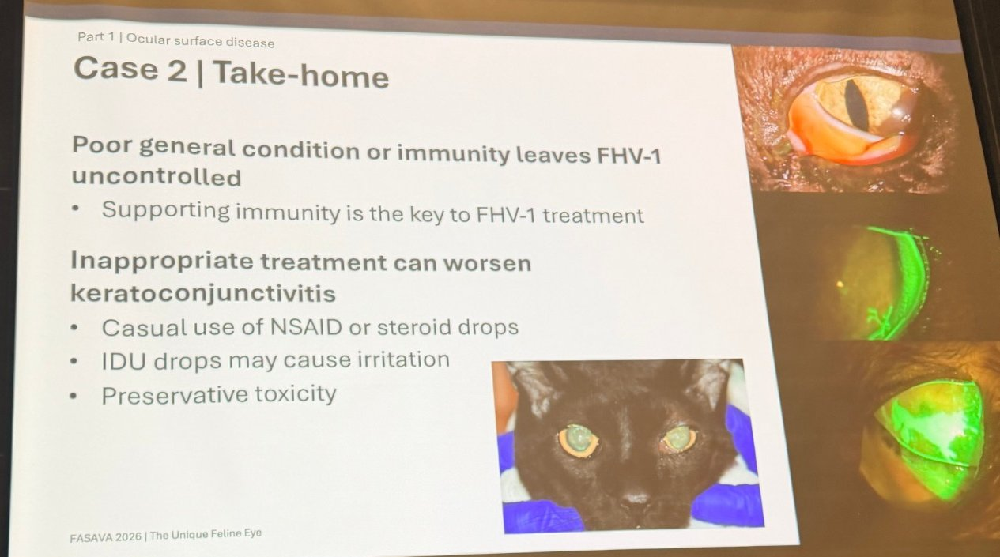
- 全身狀況或免疫力差，FHV-1 就控制不住：支持免疫是 FHV-1 治療的關鍵。
- 不適當的治療會讓角結膜炎惡化：
- 隨意使用 NSAID 或類固醇眼藥
- IDU 眼藥可能造成刺激
- 防腐劑毒性
💡 病例 2 的細節照片沒拍到；螢光染色可見大片樹枝狀到地圖狀的潰瘍。實務上：點藥一天 6 次以上的貓，眼藥裡的防腐劑（如 benzalkonium chloride）累積起來會傷角膜上皮，能選單支無防腐劑的人工淚液或玻尿酸就選（第 5 節的玻尿酸就是單支裝）。治療一陣子反而變紅、更痛，要想到藥物本身的毒性，而不只是病毒變嚴重。局部 NSAID 也會延遲角膜癒合，在 FHV-1 貓一樣要小心。
7. 總結
▾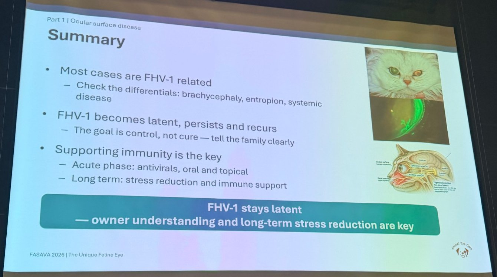
- 大多數病例和 FHV-1 有關：但要檢查鑑別診斷：短頭、眼瞼內翻、全身性疾病。
- FHV-1 會潛伏、持續存在並復發：目標是控制、不是治癒，要清楚告訴飼主。
- 支持免疫是關鍵：
- 急性期：抗病毒藥，口服與局部
- 長期：減少緊迫與支持免疫
8. Part 2：葡萄膜黑色素細胞疾病（虹膜黑變症與 FDIM）
▾💡 FDIM = feline diffuse iris melanoma，貓瀰漫性虹膜黑色素瘤，是貓最常見的眼內原發腫瘤。核心難題貫穿整個 Part 2：虹膜上的色素斑，什麼時候該摘眼？
📸 現場 病例 3「Moco」：紅眼 4 年後失明、牛眼
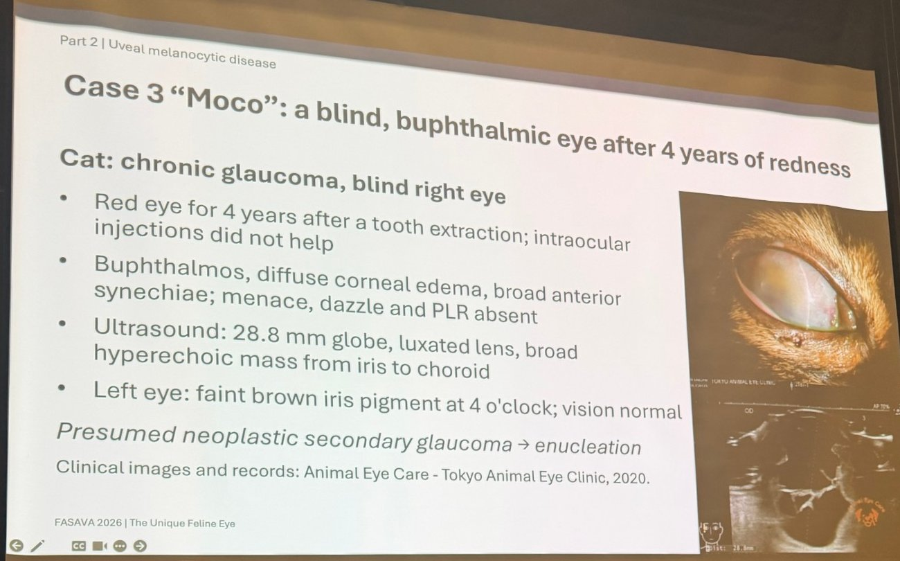
- 貓，慢性青光眼、右眼失明。
- 拔牙後紅眼 4 年；眼內注射無效。
- 牛眼、瀰漫性角膜水腫、大範圍前粘連；威脅反應、炫目反射、瞳孔光反射全部消失。
- 超音波：眼球 28.8 mm、水晶體脫位、從虹膜延伸到脈絡膜的大片高回音腫塊。
- 左眼：4 點鐘方向有淡淡的棕色虹膜色素，視力正常。
💡 這個病例是「拖太久」的範例：慢性紅眼被當成一般發炎處理 4 年，最後以續發青光眼、失明收場。成貓單眼慢性紅眼、治療反應差，要仔細看虹膜顏色有沒有變化，並考慮超音波。另一眼的小色素點也要開始拍照追蹤（見本節最後的決策投影片）。
📸 現場 組織學進程：三個階段
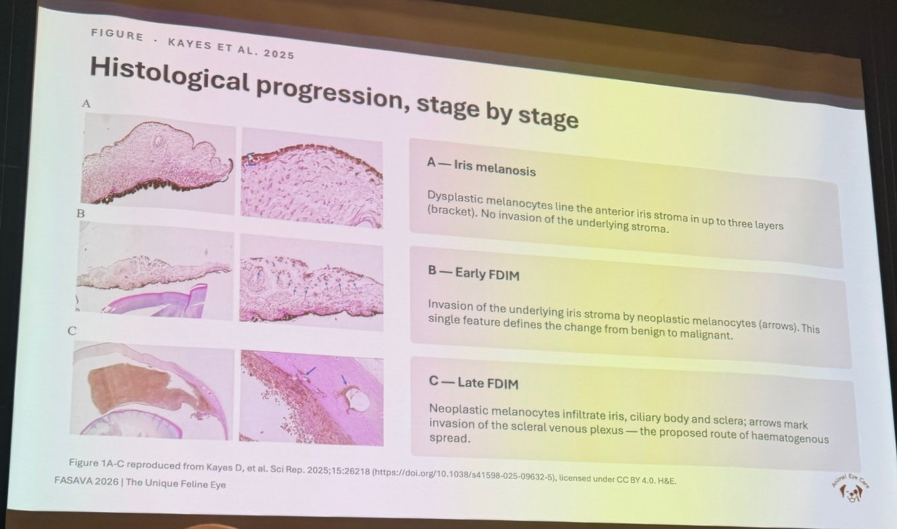
| 分期 | 組織學 | 意義 |
|---|---|---|
| A｜虹膜黑變症（iris melanosis） | 異型黑色素細胞在虹膜前表面排列，最多三層；沒有侵入底下的基質 | 良性 |
| B｜早期 FDIM | 腫瘤性黑色素細胞侵入虹膜基質（箭頭） | 這一個特徵就決定從良性變成惡性 |
| C｜晚期 FDIM | 浸潤虹膜、睫狀體與鞏膜；箭頭指鞏膜靜脈叢受侵犯 | 被認為是血行轉移的途徑 |
📸 現場 分期可預測局部行為與存活
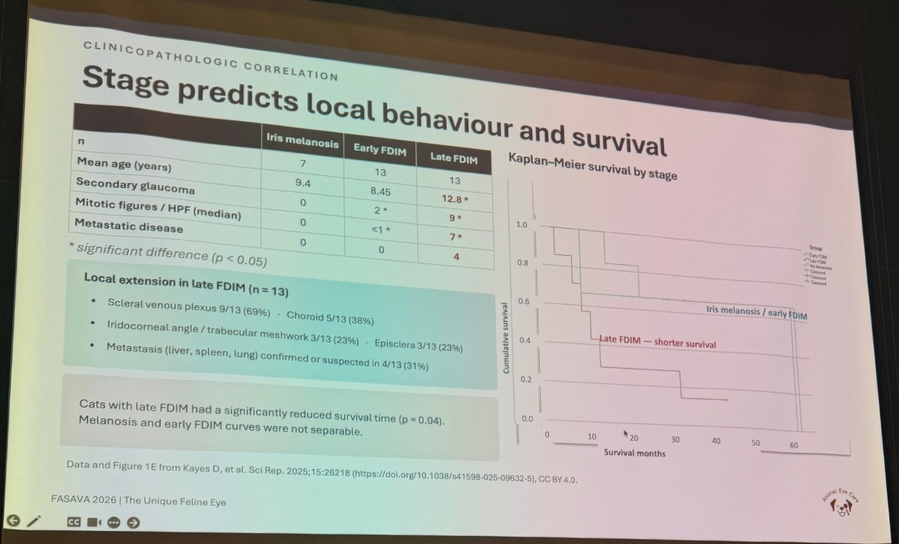
| 虹膜黑變症 | 早期 FDIM | 晚期 FDIM | |
|---|---|---|---|
| n | 7 | 13 | 13 |
| 平均年齡（歲） | 9.4 | 8.45 | 12.8* |
| 續發性青光眼 | 0 | 2* | 9* |
| 有絲分裂數／HPF（中位數） | 0 | <1* | 7* |
| 轉移 | 0 | 0 | 4 |
* 顯著差異（p < 0.05）。表格數字依照片判讀，照片有透視變形，列對齊以「轉移 4/13」與下方文字核對。
- 晚期 FDIM（n = 13）的局部侵犯：鞏膜靜脈叢 9/13（69%）、脈絡膜 5/13（38%）、虹膜角膜角／小樑網 3/13（23%）、鞏膜外層 3/13（23%）。
- 轉移（肝、脾、肺）確診或懷疑：4/13（31%）。
- 晚期 FDIM 的存活時間顯著較短（p = 0.04）；黑變症和早期 FDIM 的存活曲線分不開。
💡 臨床意義：真正危險的是「晚期」（侵入睫狀體、鞏膜靜脈叢），而晚期常伴隨續發青光眼（9/13）。早期 FDIM 雖然組織上已是惡性，預後卻和良性黑變症差不多，這就是為什麼「看到色素就摘」不一定必要，但也不能放著不管。
📸 現場 黑變症和早期 FDIM 在檢查時看起來一模一樣
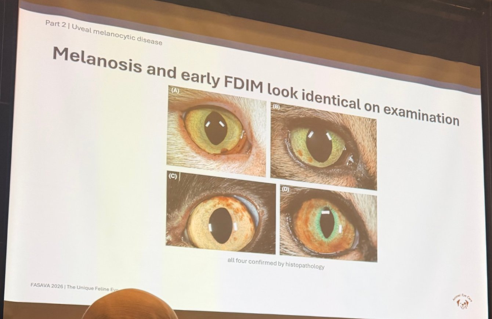
📸 四張虹膜照片都有組織病理確認，但光看外觀無法分辨哪些是黑變症、哪些是早期 FDIM。照片中沒有標出答案。
📸 現場 虹膜切片：怎麼做
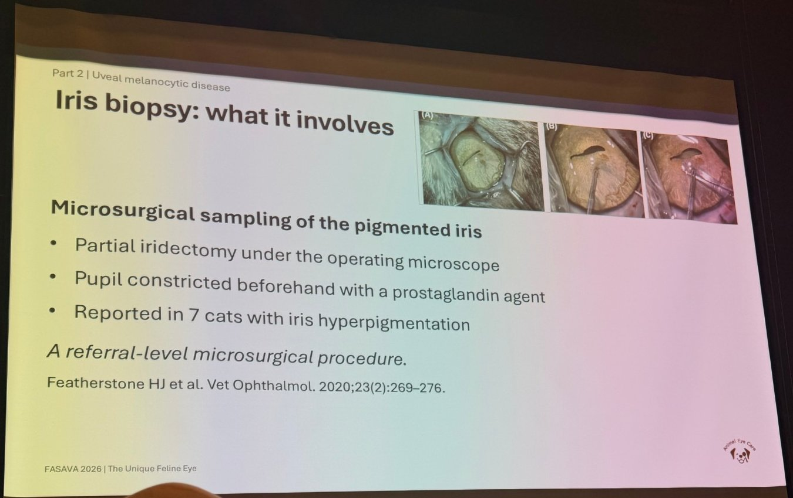
- 色素虹膜的顯微手術取樣：在手術顯微鏡下做部分虹膜切除。
- 術前先用前列腺素類藥物縮瞳。
- 報告於 7 隻虹膜色素沉著的貓。
💡 外觀無法區分 A 與 B，唯一能在保留眼球的情況下知道「有沒有侵入基質」的方法就是切片，但這是開眼內手術，一般門診做不到，證據也只有 7 隻貓。前列腺素（如 latanoprost）在貓的縮瞳效果較強，用來把虹膜撐開、方便取樣。
📸 現場 虹膜切片的診斷價值
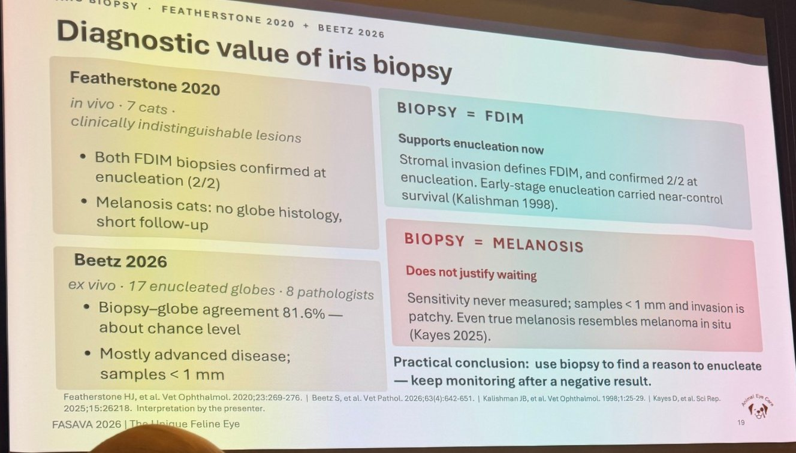
Featherstone 2020（活體，7 隻貓）
- 病灶臨床上無法區分
- 2 隻切片為 FDIM，摘眼後都確認（2/2）
- 切片為黑變症的貓：沒有眼球組織學、追蹤時間短
Beetz 2026（離體，17 顆摘除眼球、8 位病理醫師）
- 切片與整顆眼球判讀一致率 81.6%，約等於機率水準
- 多為晚期病例；樣本 < 1 mm
| 切片結果 | 意義 |
|---|---|
| FDIM | 支持現在就摘眼：基質侵入就是 FDIM 的定義，摘眼確認 2/2；早期摘眼的存活接近對照組（Kalishman 1998） |
| 黑變症 | 不足以支持繼續等待：敏感度從未被評估；樣本 < 1 mm、侵入是片狀分布；即使真的是黑變症，也類似原位黑色素瘤（Kayes 2025） |
💡 切片是「只能納入、不能排除」的檢查：陽性很可信，陰性可能只是沒切到。所以切片結果是黑變症時，不能就此放心，仍要照上面的監測方式定期拍照比對。
📸 現場 病例 Popo：虹膜切片與局部切除
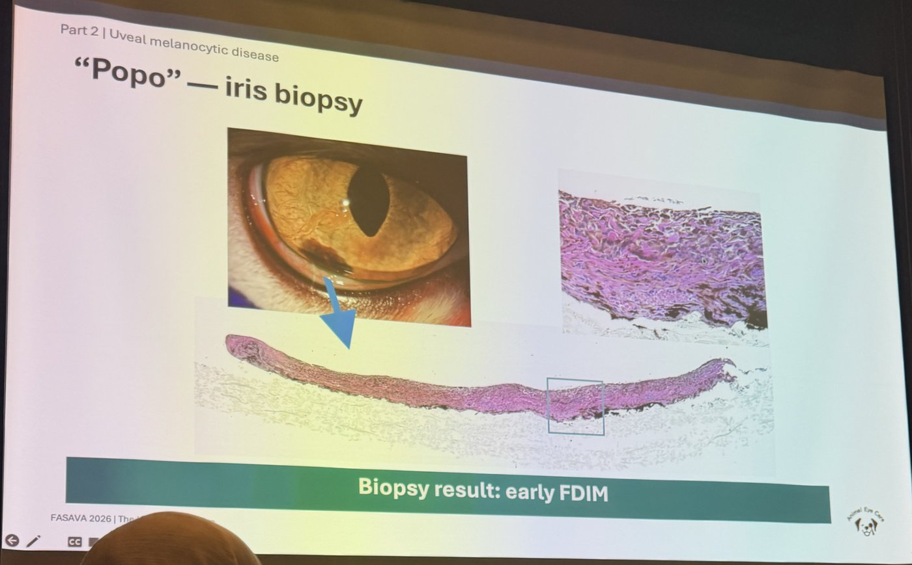
- 虹膜下方一塊局部色素斑，做虹膜切片。
- 切片結果：早期 FDIM（已侵入基質）。
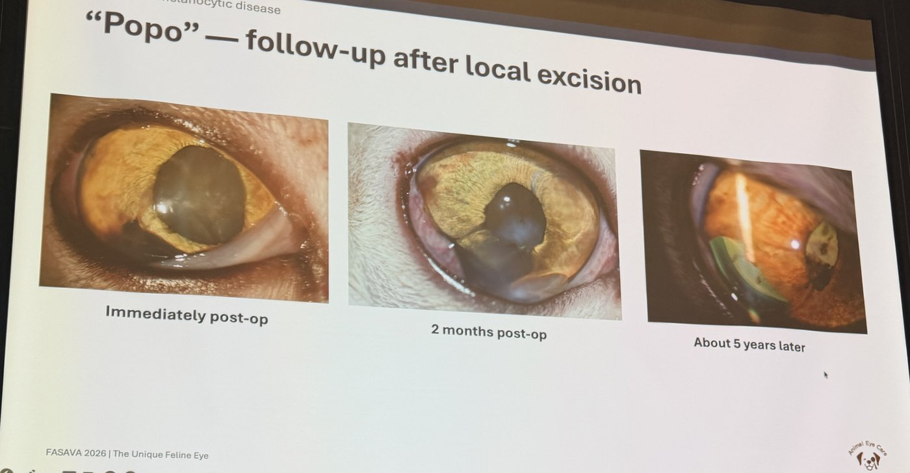
- 處置：局部切除（保留眼球），不是摘眼。
- 追蹤：術後立即、術後 2 個月，到約 5 年後眼球仍保留。
💡 這個病例對照上一張「切片＝FDIM 支持現在摘眼」：Popo 是早期、局部的 FDIM，選擇局部切除（部分虹膜切除）也保住眼球約 5 年。5 年後照片上仍看得到虹膜色素，局部切除後仍需長期監測。講者是否把這當成常規選項、還是個案，照片中看不出來，之後對照錄音確認。
📸 現場 摘眼時機：新資料怎麼說
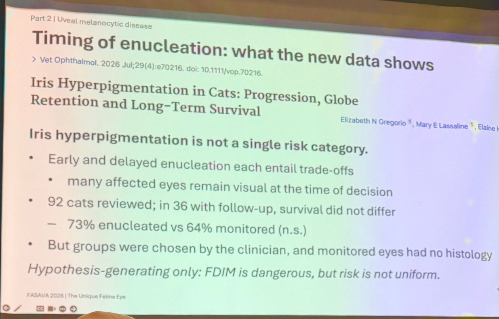
- 虹膜色素沉著不是單一的風險類別。
- 早摘和晚摘各有取捨：很多受影響的眼睛在做決定時還看得見。
- 回顧 92 隻貓；其中 36 隻有追蹤資料，存活沒有差異：摘眼組 73% vs 監測組 64%（不顯著）。
- 但分組是由臨床醫師決定的，而且監測組的眼睛沒有組織學。
💡 讀這個研究要注意選擇偏差：醫師可能把看起來比較危險的眼睛摘掉，把看起來穩定的留下來監測，所以「存活沒差」不代表「摘不摘都一樣」。講者的結論是用它來支持個別化評估風險，而不是一律等或一律摘。
📸 現場 決策、記錄與監測
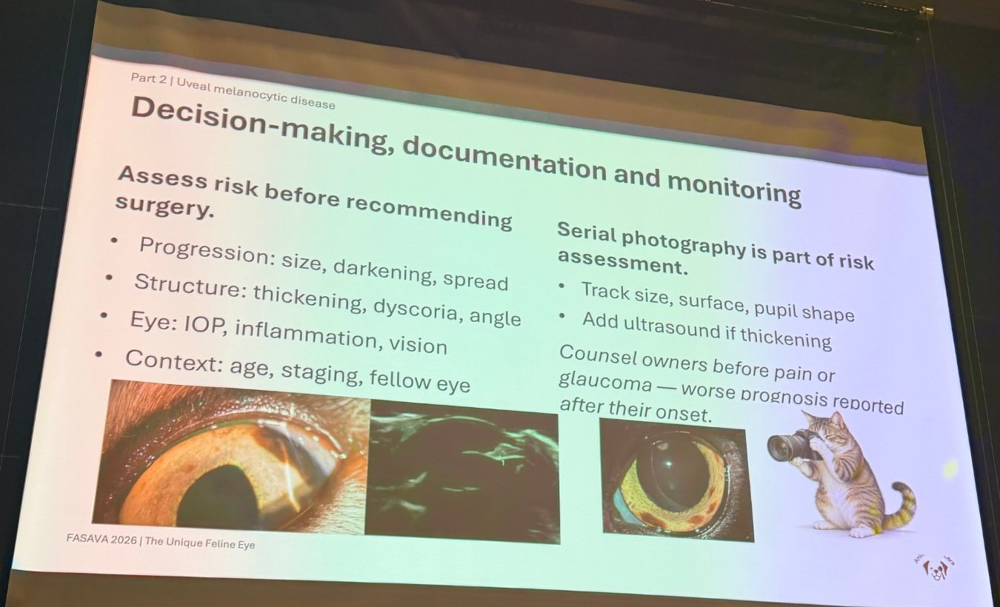
建議手術前先評估風險
- 進展：大小、顏色變深、擴散
- 結構：增厚、瞳孔變形（dyscoria）、虹膜角膜角
- 眼睛：眼壓、發炎、視力
- 整體：年齡、全身分期、另一眼
連續拍照是風險評估的一部分
- 追蹤大小、表面、瞳孔形狀
- 若有增厚，加做超音波
💡 實務做法：第一次看到虹膜色素斑就拍一張固定條件的照片（同樣的光線、角度、瞳孔大小），之後每 3–6 個月回診比對，並量眼壓。出現上面任何一項「進展、結構改變、眼壓上升或發炎」，就轉診眼科討論切片或摘除；摘除前做胸腹部影像分期。對照病例 3 Moco：等到失明、牛眼才處理，就落在「晚期 FDIM」那一欄。